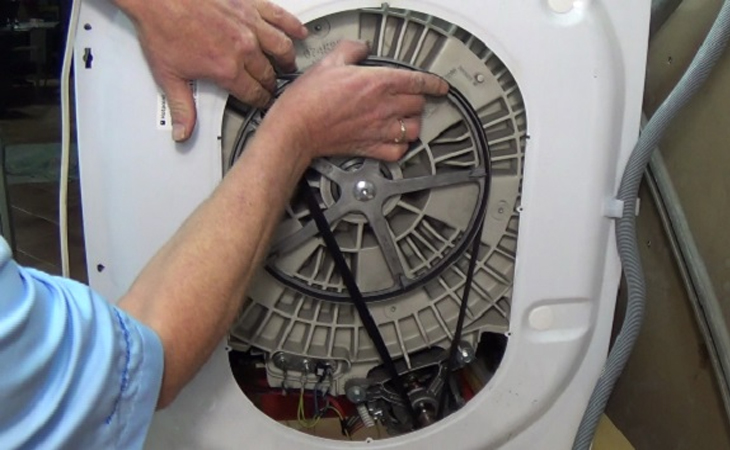

Dịch Vụ Sửa Máy Sấy Quần Áo Tại Hà Nội – Nhanh Chóng, Chuyên Nghiệp
Máy sấy quần áo là thiết bị cực kỳ quan trọng, đặc biệt là trong những ngày thời tiết nồm ẩm tại Hà Nội. Tuy nhiên, do hoạt động với công suất nhiệt lớn và liên tục, máy sấy thường gặp các vấn đề về dây curoa, thanh nhiệt hoặc cảm biến độ ẩm khiến quần áo không khô hoặc máy kêu to.
Bạn đang cần sửa máy sấy quần áo tại nhà? Điện Lạnh Bách Khoa chuyên xử lý dứt điểm các dòng máy sấy thông hơi, máy sấy ngưng tụ và máy sấy Heatpump của các hãng Electrolux, LG, Samsung, Candy...
📞 0559763681 - BẤM GỌI NGAY Hoặc Hotline: 03672741521. Phân loại các dòng máy sấy phổ biến hiện nay
Mỗi dòng máy sấy có cấu tạo nhiệt khác nhau, đòi hỏi thợ phải có kiến thức chuyên biệt để xử lý:
- Máy sấy thông hơi: Dùng thanh điện trở nhiệt, thổi hơi ẩm trực tiếp ra ngoài qua ống dẫn.
- Máy sấy ngưng tụ: Hơi ẩm được ngưng tụ thành nước và chứa trong khay hoặc thoát ra ống dẫn nước.
- Máy sấy Heatpump (Bơm nhiệt): Công nghệ hiện đại nhất, dùng máy nén để luân chuyển nhiệt, giúp bảo vệ sợi vải và tiết kiệm điện tối ưu.
2. Các lỗi thường gặp trên máy sấy quần áo
Máy sấy không quay lồng
Nguyên nhân phổ biến nhất là do đứt dây curoa hoặc hỏng tụ khởi động motor. Khi motor chạy nhưng lồng không quay, bạn sẽ nghe thấy tiếng "u u" bên trong máy.
Máy sấy kêu to, rung lắc mạnh
Do bánh tỳ lồng giặt bị mòn, hỏng bi hoặc máy đặt không cân bằng. Việc thay bánh tỳ chính hãng sẽ giúp máy hoạt động êm ái trở lại.
Máy sấy không vào điện hoặc liệt phím
Thường do hỏng bo mạch điều khiển do môi trường quá ẩm hoặc quá tải điện năng gây cháy IC nguồn và các linh kiện điện tử.
3. Tại sao máy sấy chạy nhưng quần áo không khô?
Đây là tình trạng khiến khách hàng khó chịu nhất. Có 3 nguyên nhân chính:
- Cháy thanh điện trở (thanh sấy): Máy vẫn quay nhưng không có hơi nóng để làm khô vải.
- Hỏng cảm biến độ ẩm: Máy báo sai thông tin, ngắt chương trình quá sớm khi quần áo vẫn còn ẩm.
- Lưới lọc xơ vải bị tắc: Hơi nóng không thể lưu thông, làm giảm hiệu suất sấy và dễ gây quá nhiệt cháy máy.

4. Điện Lạnh Bách Khoa chuyên sửa các hãng máy nào?
Chúng tôi sẵn kho linh kiện chính hãng (dây curoa, thanh nhiệt, cảm biến) cho các thương hiệu:
- Electrolux: Dòng máy sấy phổ biến nhất, chuyên xử lý lỗi đứt dây curoa và hỏng mạch điều khiển.
- LG, Samsung: Các dòng máy sấy Heatpump đời mới, xử lý chuyên sâu mã lỗi phần mềm và máy nén.
- Candy, Whirlpool, Maytag: Các dòng máy nhập khẩu Châu Âu và Mỹ với linh kiện hiếm.
5. Quy trình sửa chữa chuyên nghiệp
- Bước 1: Tiếp nhận yêu cầu và tư vấn tình trạng hư hỏng sơ bộ qua Hotline.
- Bước 2: Thợ kỹ thuật có mặt sau 20-30 phút, tháo máy kiểm tra dây curoa, hệ thống nhiệt và bo mạch.
- Bước 3: Báo giá chi tiết linh kiện cần thay thế theo đúng đơn giá công ty.
- Bước 4: Tiến hành sửa chữa, kết hợp vệ sinh bụi vải tích tụ bên trong máy (nguyên nhân tiềm ẩn gây hỏa hoạn).
- Bước 5: Test máy thực tế, bàn giao và viết phiếu bảo hành từ 6-12 tháng.

Vệ sinh và bảo dưỡng hệ thống nhiệt máy sấy định kỳ để đảm bảo hiệu suất6. Mẹo sử dụng máy sấy bền bỉ
- Vệ sinh lưới lọc sau mỗi lần sấy: Đây là việc quan trọng nhất để máy bền, sấy nhanh khô và tiết kiệm điện.
- Không sấy quá nhiều quần áo một lúc: Tránh tình trạng làm giãn, đứt dây curoa hoặc cháy motor do quá tải.
- Phân loại vải trước khi sấy: Chọn chế độ nhiệt phù hợp để bảo vệ sợi vải và tránh làm hỏng cảm biến độ ẩm.
- Đặt máy nơi thoáng mát: Đặc biệt với máy sấy thông hơi để luồng khí nóng ẩm thoát ra ngoài dễ dàng nhất.
ĐẶT LỊCH SỬA MÁY SẤY NGAY
Chuyên nghiệp - Tận tâm - Có mặt sau 20 phút gọi điện
HOTLINE: 0559763681